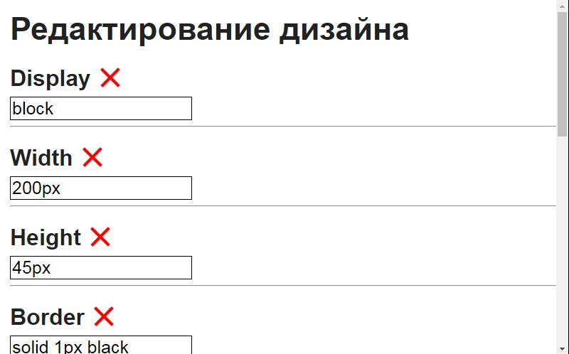
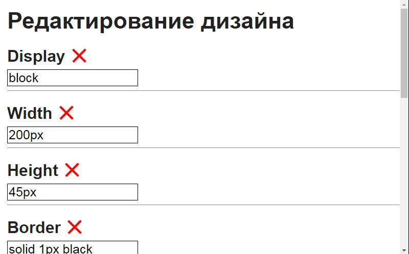
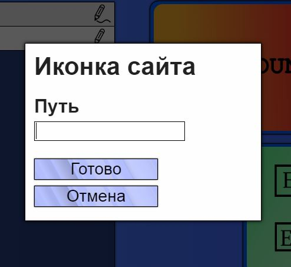
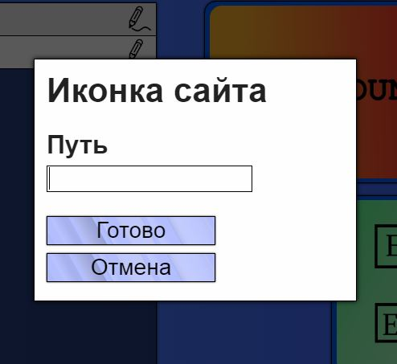

Создать элемент в данном редакторе довольно просто. Вы можете сделать это, кликнув по одной из ячеек в колонке 'Популярные', либо, нажав кнопку 'Создать'.
Если вы нажали на кнопку 'Создать', появится окошко с настройкой создания нового элемента. Верхний выпадающий список - тип элемента. Нижнее поле ввода - его индекс.
Чтобы редактировать элемент, нажмите на кнопку со значком троеточие. После этого откроется окошко с настройками.
Здесь вы можете редактировать элемент. Когда закончите, нажмите кнопку 'Сохранить'.
Открыв вкладку настройки, вы сможете изменить имя сайта и файла. После их изменения необходимо нажать на кнопку 'Сохранить'.
Ниже вы можете увидеть кнопку 'Компиляция', нажав на которую вы скачаете HTML файл сайта.
Если вам надо поменять дизайн элемента, нажмите на кнопку с иконкой пишущего карандаша. Откроется окошко с настройками дизайна.
 

Для изменения этих настроек понадобится хотя-бы минимальное владение CSS. Промотаем ниже.
Кнопка 'Добавить' добавляет аттрибут дизайна следуя введённому вами названию. Чтобы удалить аттрибут, нажмите на крестик у его названия. Когда закончите, нажмите кнопку 'Сохранить'
Чтобы открыть настройки заднего фона, нажмите на ячейку 'Задний фон' в колонке 'Другое'.
Здесь находятся различные типа фона, один из которых вы можете выбрать, кликнув по нему, после чего откроются параметры выбранного типа.
Чтобы открыть параметры иконки, нажмите на ячейку 'Иконка сайта' в колонке 'Другое'.
 

Там вы сможете задать путь для иконки.
Настроить отступы элементов можно, нажав на ячейку 'Отступ элементов' в колонке 'Другие'.
Здесь вы сможете настроить отступ и задать еденицу измерения. Поле с галочкой 'Применить для всех элементов' означает, что у всех элементов отступы сбросятся до значения, заданного вами. Когда закончите, нажмите на кнопку 'Готово', расположенную ниже.
Вы также можете назначить для каждого элемента свой отступ. Для этого перейдите в настройки элемента, промотайте вниз и аналогично задайте отступ.
Вы можете изменить порядок элементов на странице, нажимая на стрелки в списке.

Делая сайт, вы можете настроить сбор информации. С помощью этой функции можно создавать формы, информация из которых после заполнения отправляется вам на почту.
Для начала, перейдите в настройки сайта и нажмите кнопку 'Сбор информации'.


Нажмите кнопку 'Включить'
Появится поле для ввода почты, куда вам будет отправляться информация с вашего сайта.
Хорошо, режим сбора информации включен. Чтобы данные собирались с элементов, нужно включить это в их настройках.
Если отмечено поле с галкой 'Обязательное заполнение', то отправить форму, если этот элемент не заполнен, не получится.
Готово! На вашем сайте появилась кнопка, нажав на которую, вы отправите информацию на почту. Чтобы сменить её, просто создайте новую кнопку с индексом 'отправить'.
Чтобы посмотреть сайт, достаточно перейти во вкладку 'Просмотр'.